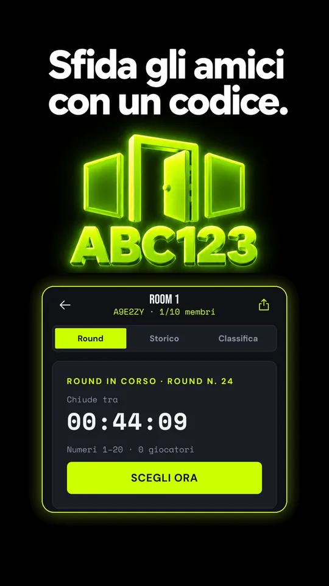
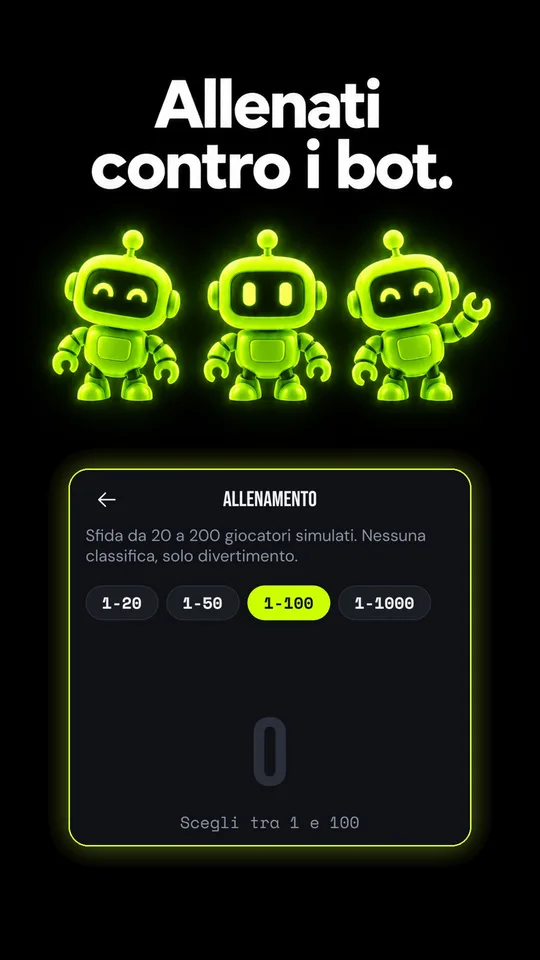
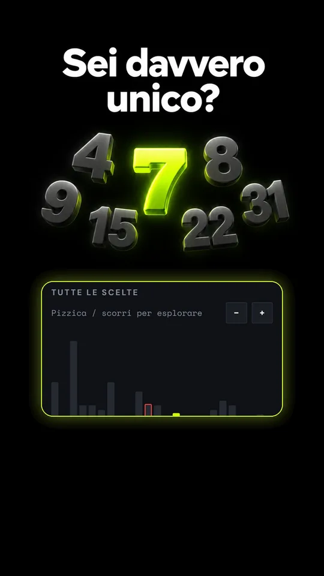
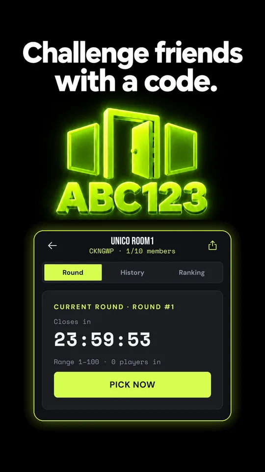
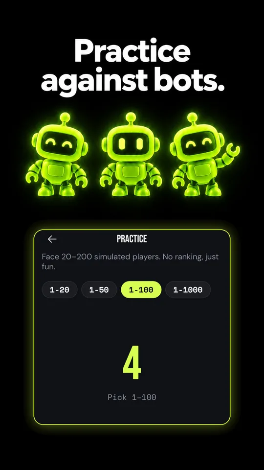
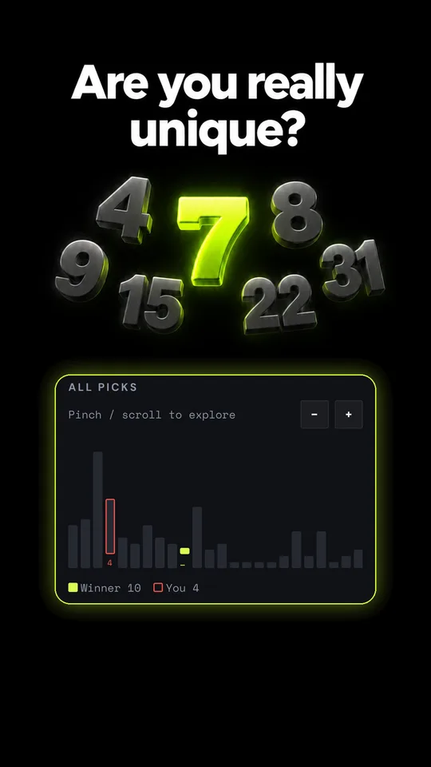

UNICO
Su Google PlayOn Google PlaySii unico.Be the only one.
Numeri e strategiaNumbers & strategy
Tutti puntano al numero più basso. Ma se lo scelgono in troppi, nessuno vince. Quanto ti fidi degli altri giocatori?Everyone is aiming for the lowest number. But if too many pick it, nobody wins. How far do you trust the other players?
Ogni giorno scegli un numero da 1 a 99.999. Vince il numero più basso scelto da una sola persona.Each day you choose a number from 1 to 99,999. The lowest number chosen by exactly one person wins.
Non basta scegliere un numero basso: se qualcun altro sceglie lo stesso, quel numero non può vincere. La sfida è immaginare le scelte degli altri e trovare il tuo equilibrio tra un numero basso e uno poco prevedibile.A low number is not enough: if someone else picks the same number, it cannot win. The challenge is to guess what the others will choose and find your balance between a low number and an unexpected one.
Dentro il giocoInside the game










Prova la regolaTry the rule
Simulazione: tu e altri 7 giocatori virtuali scegliete un numero da 1 a 12. Vince il più basso scelto da una sola persona.Simulation: you and 7 virtual players each pick a number from 1 to 12. The lowest number chosen by exactly one person wins.
In breveAt a glance
Sfida del giornoDaily challenge
Un round globale ogni giorno, per tutti.One global round every day, for everyone.
Stanze privatePrivate rooms
Sfida gli amici con un codice.Challenge your friends with a code.
Allenamento contro botPractice vs bots
Prova la regola in una modalità separata dalle partite vere.Try the rule in a mode kept apart from real matches.